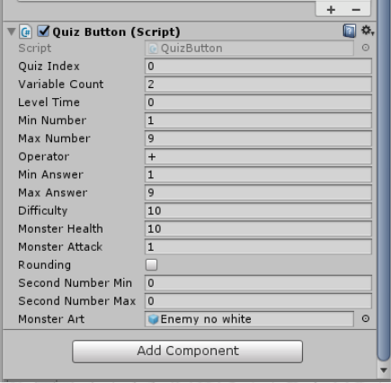

Mathtasic Monsters is the game I developed during my final year at AIE. It's an Educational RPG built for mobiles and Tablets, designed to teach primary school students improve on their maths skills through gameplay.
Note that this page's video is quite special! Instead of being something I recorded and uploaded myself, it was actually submitted by a team member in another group whose child was interested in playing the game. while the child's age was a bit younger than our demographic, it's still an excellent demonstration of the fun and value that can be found in this game!
The team was compromised of six people: 3 Designers, each focussing on Game Design, UI Design, and Sound Design, two artists focussing on creating monster models and backgrounds, and myself the programmer.
Because I was the only programmer, my main focus was on building systems that made it easier for Designers to implement their work.
UI Art that changed could simply be assigned to public arrays. The cost, ability, texture and requirements of a part could be edited in a prefab.
But the best application of this process can be in the game's levels which, while procedural, are built with very strict requirements and variables that are used to determine the difficulty of a question and its answer.
The idea of truly gamifying our mathematics was the game's biggest pull, as while there are many games that give mathematical questions, few games had truly random questions. After thinking for a while, we eventually ended up with the button as shown in the following image.

Any button a player clicks on with this script will start a new level with the monster's stats, number range, answer range, and reward changing depending on variables sst.
At the end of each turn, a new question is generated using the following function.
//Uses given values to calculate a random sum and its components, then store and display them.
internal void makeQuestion(QuizButton a_running, bool phase)
{
if (calculator == null)
calculator = FindObjectOfType();
if (container == null)
container = FindObjectOfType();
int[] numbers = new int[a_running.variableCount];
int answer = -2;
string oper = "";
//Randomise as many numbers as required, within range.
for (int i = 0; i < a_running.variableCount; i++)
{
numbers[i] = (int)UnityEngine.Random.Range(a_running.minNumber, (a_running.maxNumber + 1));
}
if(a_running.operator=='x')
{
//If operator is 'x', second number is one of two possible numbers.
numbers[1] = (int)UnityEngine.Random.Range(a_running.secondNumberMin, (a_running.secondNumberMax + 1));
}
switch (a_running.Operator)
{
case '+':
answer = numbers[0];
for (int i = 1; i < a_running.variableCount; i++)
{
answer += numbers[i];
oper = "+ ";
}
break;
case '-':
answer = numbers[0];
for (int i = 1; i < a_running.variableCount; i++)
{
answer -= numbers[i];
oper = "- ";
}
break;
case 'x':
answer = numbers[0] * numbers[1];
oper = "x ";
break;
default:
answer = numbers[0];
for (int i = 1; i < a_running.variableCount; i++)
{
answer /= numbers[i];
oper = "/ ";
}
break;
}
bool rounding = a_running.rounding;
if (a_running.rounding) //if box is ticked, need to make sure numbers don't require rounding up.
{
rounding = preventRounding(numbers, a_running, answer);
}
//if Answer is too low/too high, or requires rounding to solve, we try again.
if (answer <= a_running.minAnswer || answer >= a_running.maxAnswer || rounding)
{
makeQuestion(a_running, phase);
return;
}
string answerNeeded = answer.ToString("F0");
container.SetMultiple(answer, phase, a_running);
string answerWords;
answerWords = " ";
answerWords += numbers[0].ToString("F0");
for (int i = 1; i < a_running.variableCount; i++)
{
answerWords += "\n" + oper + numbers[i].ToString("F0");
answer += numbers[i];
}
answerWords += "\n= ";
GetComponent().text = answerWords;
calculator.answerNeeded = answerNeeded;
}
The end result is a system that makes it incredibly easy for Designers to implement, test, and adjust their own questions, all in the editor without needing to change any code.
Boss Design
The Endless Arena.
But while the questions and boss fights made the game enjoyable and compelling in their own right, I felt the game had one flaw: It was lacking replay value.
This is because while the questions were generated randomly, the actual level progression was linear. So while the player could experience new questions if they replayed them, they likely wouldn't after their first run.
To combat this, I designed and built the endless Mode, a competitive gauntlet that takes inspiration from both modern roguelikes and the Battle Arena in Final Fantasy VII,
During this mode, players fight monsters until they surrender or lose. When a monster dies, the player’s stats are reset to full, and there is a brief rest period where three boxes appear. Selecting a box will add a penalty/boost to either the player or their opponents, and increase/decrease the their scoring modifier, relative to how easy/hard the selected boss will affect difficulty.
The gametype also caters to players of multiple playstyles, as those who want an easier, longer, experience can judge themselves based off progression, whereas those who prefer harder, shorter, sessions can try for the maximum score.
If introduced to a classroom setting, this would allow students to compete for the best scores, giving them further incentive to play a game teaching them about math.